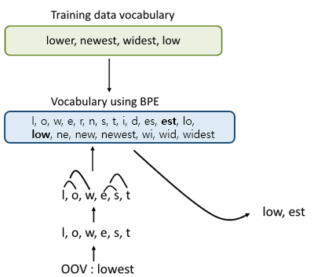
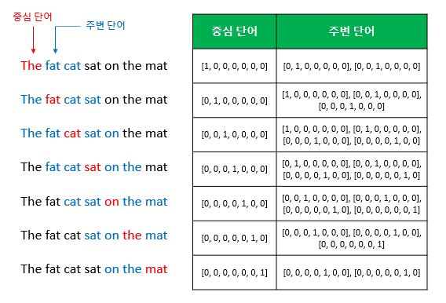
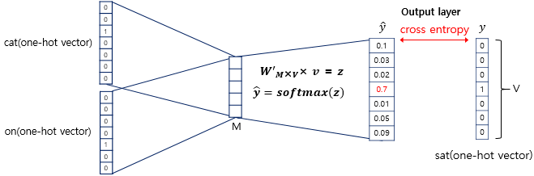
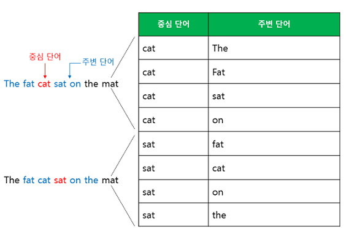
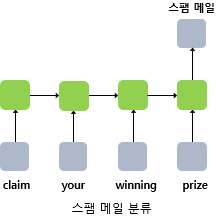
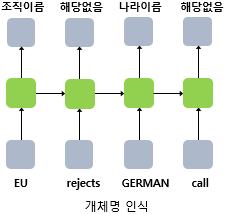
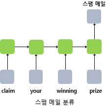
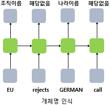
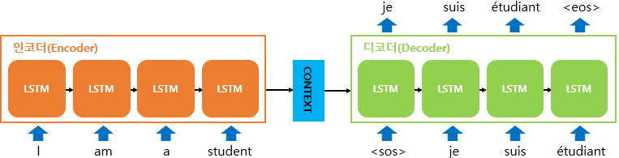

NLP Interview List
NLP 면접질문을 대비합니다. GPT 기반으로 작성되었습니다.
자연어 처리 (NLP) 기초
토큰화(Tokenization)
- 토큰화는 주어진 텍스트를 토큰(Token)이라 불리는 작은 단위로 나누는 과정
- “I love natural language processing!”이라는 문장을 토큰화하면 [“I”, “love”, “natural”, “language”, “processing”, “!”]
- 단순히 공백을 기준으로 나누는 것부터 형태소 분석, 서브워드 토큰화(Subword Tokenization) 등 다양한 기법
- Subword Tokenization
- 단어를 더 작은 단위인 서브워드(Subword)로 분리하는 토큰화(birthplace = birth + place)
- 기존 단어 수준 토큰화에서는 학습 데이터에 등장하지 않은 단어(OOV)를 처리
- 단어 수준 토큰화는 어휘 크기가 매우 크고 희소한 단어들로 인해 행렬의 차원이 높아지는 문제
- 대표적으로 가장 Byte Pair Encoding(BPE)가 있음

BPE Encoding
임베딩(Embedding)
- 단어나 토큰을 고정된 크기의 실수 벡터로 표현하는 방법
- 전통적으로는 one-hot encoding을 사용했지만 의미적 거리를 측정하지 못하고, 차원의 저주가 발생
- 전 학습된 워드 임베딩(dense vector)로 표현하는 것이 일반적
- Word2Vec
- google이 개발한 워드임베딩 알고리즘
- CBOW(Continuous Bag of Words), Skip-Gram 두가지 방식으로 학습을 제공
- CBOW
- 
- 
- Skip-Gram
- 

- Fast-Text
- Google이 개발한 Sub-word 기반의 워드임베딩 알고리즘
- 각 단어를 n-gram으로 분할하여 sub-word로 다루기 때문에 OOV에도 대응가능하고 학습속도가 빠르며 단어의 형태학적 특성을 학습가능
- apple에 대한 n-gram tokenize
- n=3) <ap, app, ppl, ple, le>,
- n=6) <ap, app, ppl, ppl, le>, <app, appl, pple, ple>, <appl, pple>, …,
- n=3) <ap, app, ppl, ple, le>,
언어 모델링(Language Modeling)
- 주어진 단어 시퀀스의 확률 분포를 추정하는 작업
- “The cat sits on the”라는 문장이 주어졌을 때, 언어 모델은 다음 단어로 “mat”, “couch”, “floor” 등이 올 확률을 계산
- \(P(w_1, w_2, ..., w_n) = P(w_1) * P(w_2|w_1) * P(w_3|w_1, w_2) * ... * P(w_n|w_1, w_2, ..., w_{n-1})\)
- NLP에서 사용되는 평가 지표(Metrics)
- Perplexity
- 언어 모델이 실제 텍스트 데이터를 얼마나 잘 생성하는지를 측정 모델이 할당한 확률의 역수로 계산되며, 값이 낮을수록 좋은 모델
- 문장에 대한 Generation probability의 역수의 기하평균
- 혹은 \(PPL(W) = \sqrt[N]{\frac{1}{P(w_1, w_2, w_3, ...., w_N)}} = \sqrt[N]{\frac{1}{\displaystyle \prod_{i=1}^{N} P(w_i | w_1, w_2, w_3, ...., w_{i-1})}}\)
- 언어 모델이 실제 텍스트 데이터를 얼마나 잘 생성하는지를 측정 모델이 할당한 확률의 역수로 계산되며, 값이 낮을수록 좋은 모델
- BLEU(bilingual evaluation understudy)
- 번역기가 번역한 문장이 사람이 정한 정답 문장과 유사할 수록 더 높은 스코어
- Generated Sentence의 단어가 Reference Sentence에 포함되는 정도로 측정
- \({w_{gen}∈S_{ref}|w_{gen}∈S{gen}}/|S_{gen}|\)
- ROUGE
- Reference Setence의 단어가 Generated Sentence에 포함되는 정도
- {w{ref}∈S{gen}|w{ref}∈S{ref}}/|S{ref}|
- Perplexity
Transformers
Note | GPT-2,3 등으로부터 최신 GPT 서비스에 이르기까지 LLM의 가장 기본이 되는 이론적 토대들은 RNN으로 부터 파생
RNN
- Common NeuralNetwork은 Input Size가 고정되어 있어 입력길이가 가변적인 자연어 Task를 풀기에는 부적합
- RNN은 은닉층의 노드에서 활성화 함수를 통해 나온 결과값을 출력층 방향으로도 보내면서, 다시 은닉층 노드의 다음 계산의 입력으로 보내는 특징
- RNN Architecture

 

- Sequence To Sequence
- RNN으로 이미 one-to-many, many-to-many task를 풀 수 있었지만, RNN으로 encoder-decoder 구조를 구성할 수 있음
- 입력 문장과 출력 문장의 길이가 다를 경우에 사용하는데, 대표적인 분야가 번역기나 텍스트 요약과 같은 경우
- 
- 인코더 RNN 셀의 마지막 시점의 은닉 상태를 디코더 RNN 셀로 넘겨주는데 이를 컨텍스트 벡터
- 컨텍스트 벡터는 디코더 RNN 셀의 첫번째 은닉 상태
- decoder에서의 입력순서로 인해 <sos> 토큰과 <eos> 토큰을 관리해줘야함
Attention
- RNN에 기반한 seq2seq 모델에는 크게 두 가지 문제
- 하나의 고정된 크기의 벡터에 모든 정보를 압축하려고 하니까 정보 손실이 발생
- RNN의 고질적인 문제인 기울기 소실(vanishing gradient) 문제
- Key Idea of Attention
- 디코더에서 출력 단어를 예측하는 매 시점(time step)마다, 인코더에서의 전체 입력 문장을 다시 한 번 참고한다는 것
- 모든 입력문장을 전부 참조하는 것이 아니라, 해당 시점에서 예측해야할 단어와 연관이 있는 입력 단어 부분을 좀 더 집중(attention)
- \(Attention(Q, K, V) = Attention Value\)

- 어텐션 함수는 주어진 ’쿼리(Query)’에 대해서 모든 ’키(Key)’와의 유사도를 각각 구함
- 구해낸 이 유사도를 키와 맵핑되어있는 각각의 ’값(Value)’에 반영
- 유사도가 반영된 ’값(Value)’을 모두 더해서 리턴(Attention Value 라고 부름)
- sequence to sequence 모델을 기준으로 다음과 같이 정의
- Q = Query : t 시점의 디코더 셀에서의 은닉 상태
- K = Keys : 모든 시점의 인코더 셀의 은닉 상태들
- V = Values : 모든 시점의 인코더 셀의 은닉 상태들
- Dot-Product Attention
- (To Be Continue)